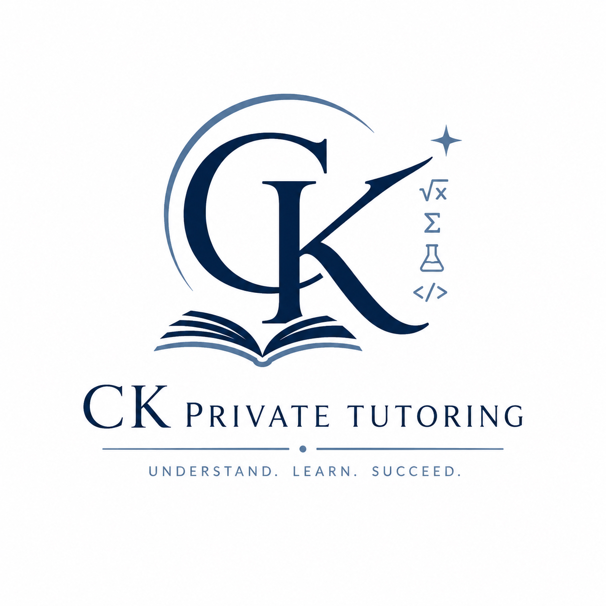

I help students build confidence and achieve academic success through personalized Math and Science tutoring tailored to their unique learning goals.
Start with 2 free trial lessons - No commitment required. Please fill out form by clicking the button below.
Book a free consultation →My appreciation for mathematics developed through my professional experience as a chemical laboratory analyst. While working with experimental data, I became increasingly interested in data analysis and the role mathematics plays in extracting meaningful insights for complex information.
This curiosity led me to revisit and study mathematics extensively, including calculus 1-4, linear algebra, ODEs/PDEs, statistics, and computer science. I currently work in 2 research labs where I study the gut brain axis utilizing machine learning algorithms and constructing a beetle classification system with Convolutional Neural Networks.
In my free time I study Bioinformatics which is a subject that sits at the intersection between Mathematics, Statistics, and Biology. I am currently working on potential drug discoveries by looking at protein-protein interaction networks to uncover central nodes/active sites that can be targeted to disrupt disease pathways.
Studying mathematics has strengthened my ability to think logically, approach problems systematically, and communicate complex ideas clearly. These are the same skills I strive to help my students develop. My goal is not only to help students succeed academically, but also to show them how mathematical thinking can become a valuable tool in everyday life.
A short line about the range of subjects you cover.
Algebra, Pre-Calculus, Calculus, Statistics
Biology, Chemistry, Physics
Python, Java, Github
"Cole has helped me a lot with my preparations for Chemistry 123 and 233 (UBC Organic Chemistry) at UBC."
"I tried many tutors for my child since he was in Grade 8. Now he is in Grade 9, but his grades was still almost the same and I was looking for someone who can really help him improve his scores. Then after meeting Cole, my child became much better in learning. My child’s learning skill and confidence improved a lot. I am very thankful for the way that he teaches with care and honestly."
Book a free 30-minute consultation to see if we're a good fit.
Book a free consultation →